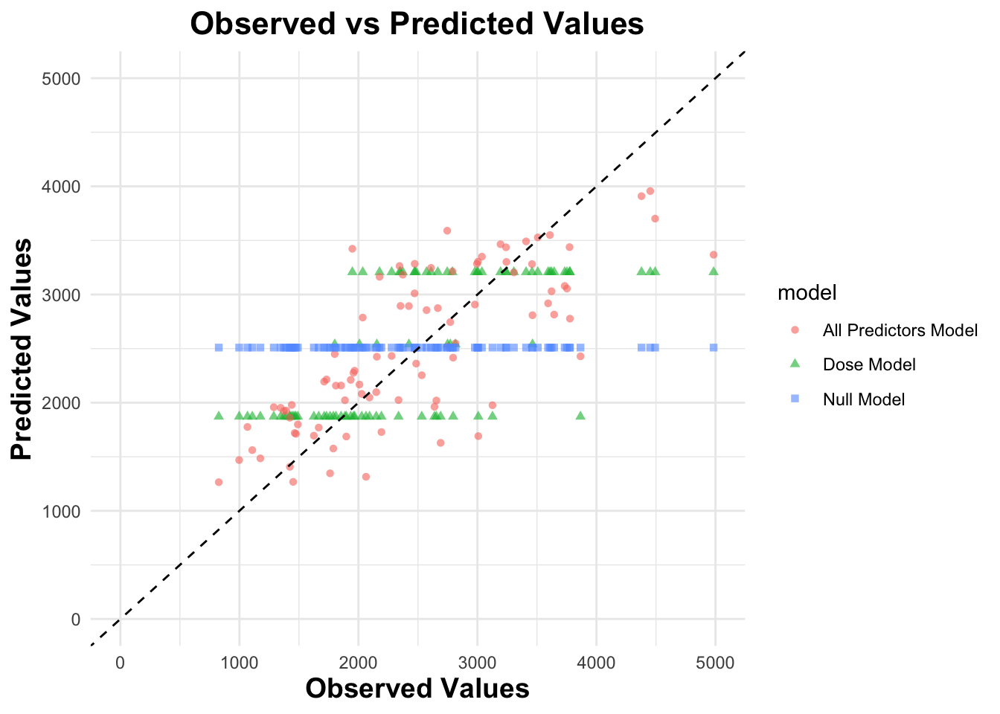
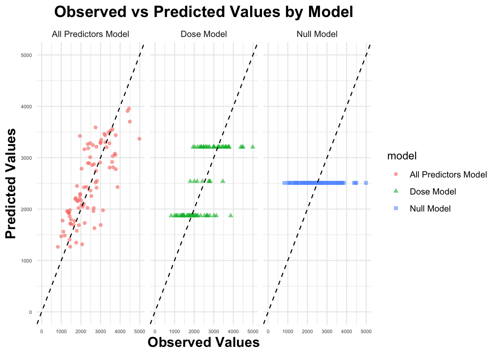
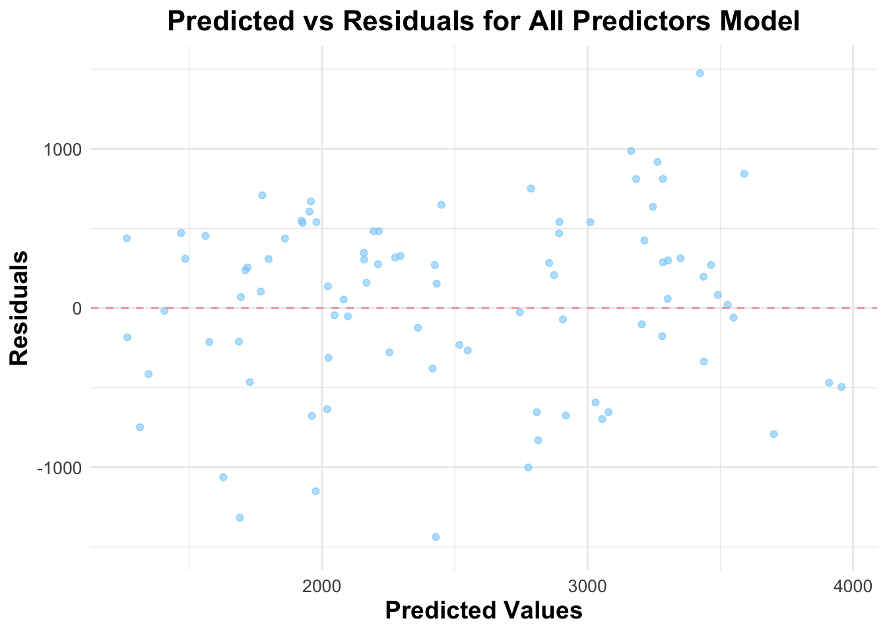
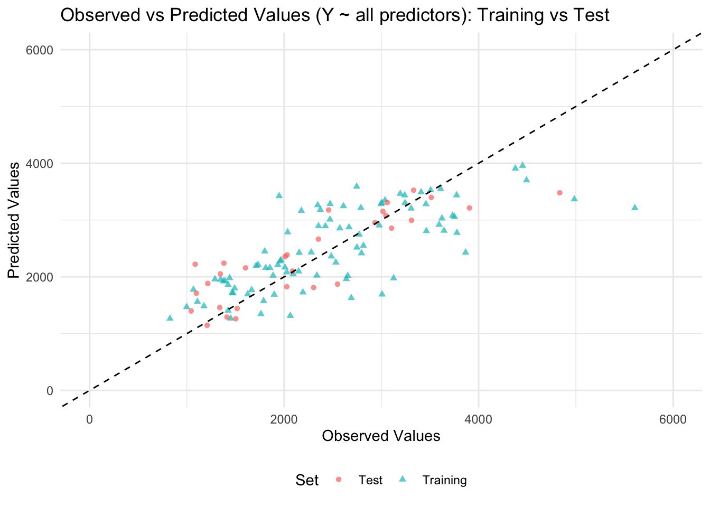

# Load packageslibrary(ggplot2)library(dplyr)library(here)# Load the datasetdata <-read.csv(here("fitting-exercise", "Mavoglurant_A2121_nmpk.csv"))# Create the plot with facets by DOSE, showing both lines and pointsggplot(data, aes(x = TIME, y = DV, group = ID)) +geom_line(color ="lightblue") +# Add linesgeom_point(color ="skyblue") +# Add pointsfacet_wrap(~ DOSE) +# Facet by dose with the same y-axis scalelabs(title ="DV over Time Stratified by DOSE",x ="Time",y ="DV") +theme_minimal() +theme(strip.text =element_text(face ="bold"))
# Filter to keep only observations where OCC == 1data1 <- data %>%filter(OCC ==1)# Exclude observations where TIME = 0 and compute the sum of DV for each individualdata_sum <- data1 %>%filter(TIME !=0) %>%group_by(ID) %>%summarize(Y =sum(DV)) # Sum DV for each IDdim(data_sum)
[1] 120 2
# Create a data frame with only observations where TIME == 0data_time0 <- data1 %>%filter(TIME ==0)dim(data_time0)
[1] 120 17
# Join the two data frames by ID to create the final datasetjoint_data <-left_join(data_time0, data_sum, by ="ID")dim(joint_data)
[1] 120 18
# Convert RACE and SEX to factors and keep only the required columnsfinal_data <- joint_data %>%mutate(RACE =as.factor(RACE),SEX =as.factor(SEX)) %>%select(Y, DOSE, AGE, SEX, RACE, WT, HT)# View the resulting data framehead(final_data)
# Save as rdssave_data_location <- here::here("fitting-exercise", "final_data.rds")saveRDS(final_data, file = save_data_location)
EDA
First make summary table of the variables:
# Load packagelibrary(gtsummary)# Summary statistics for variablestbl_summary(final_data)
Characteristic
N = 1201
Y
2,349 (1,689, 3,054)
DOSE
25
59 (49%)
37.5
12 (10%)
50
49 (41%)
AGE
31 (26, 41)
SEX
1
104 (87%)
2
16 (13%)
RACE
1
74 (62%)
2
36 (30%)
7
2 (1.7%)
88
8 (6.7%)
WT
82 (73, 90)
HT
1.77 (1.70, 1.82)
1 Median (Q1, Q3); n (%)
The table provides an overview of the data, highlighting three dose treatments: 25, 37.5, and 50. The high and low doses make up the majority, while the medium dose (37.5) accounts for only 12% of the observations. Additionally, there are four different race categories, encoded as 1, 2, 7, and 88, with categories 1 and 2 being the most prevalent.
# Load packageslibrary(ggplot2)library(dplyr)# Create a function to generate histogramsplot_histogram <-function(data, var, binwidth =NULL) {ggplot(data, aes(x =!!sym(var))) +geom_histogram(aes(y = ..density..), fill ="skyblue", color ="black", bins =30) +geom_density(color ="pink", linewidth =1) +# Overlay density curvelabs(title =paste("Histogram of", var), x = var, y ="Density") +theme_minimal()}# Plot histograms for Y, AGE, WT, and HThist_Y <-plot_histogram(final_data, "Y")hist_AGE <-plot_histogram(final_data, "AGE")hist_WT <-plot_histogram(final_data, "WT")hist_HT <-plot_histogram(final_data, "HT")# Print plotsprint(hist_Y)
print(hist_AGE)
print(hist_WT)
print(hist_HT)
Y exhibits a right-skewed distribution, indicating that most values are concentrated on the lower end, with a few higher values extending the tail to the right. AGE follows a bimodal distribution, suggesting the presence of two distinct age groups in the dataset. WT (Weight) appears to be approximately normally distributed. HT (Height) shows a left-skewed distribution, where most values are on the higher end, with a tail extending towards lower values.
Now make some scatterplots/boxplots between Y and other predictors.
# Load necessary librarylibrary(ggplot2)library(dplyr)# Boxplots for Y vs categorical variablesboxplot_dose <-ggplot(final_data, aes(x =as.factor(DOSE), y = Y)) +#although DOSE is a continuous variable, it only has three values, so box plot will be clearer to display the relationshipgeom_boxplot(fill ="pink", color ="black") +labs(title ="Boxplot of Y vs Dose", x ="Dose", y ="Y") +theme_minimal()boxplot_sex <-ggplot(final_data, aes(x = SEX, y = Y)) +geom_boxplot(fill ="pink", color ="black") +labs(title ="Boxplot of Y vs Sex", x ="Sex", y ="Y") +theme_minimal()boxplot_race <-ggplot(final_data, aes(x = RACE, y = Y)) +geom_boxplot(fill ="pink", color ="black") +labs(title ="Boxplot of Y vs Race", x ="Race", y ="Y") +theme_minimal()# Scatter plots for Y vs continuous variablesscatter_age <-ggplot(final_data, aes(x = AGE, y = Y)) +geom_point(alpha =0.6, color ="orange") +geom_smooth(method ="lm", color ="black", se =FALSE) +# Add trend linelabs(title ="Scatter Plot of Y vs Age", x ="Age", y ="Y") +theme_minimal()scatter_wt <-ggplot(final_data, aes(x = WT, y = Y)) +geom_point(alpha =0.6, color ="orange") +geom_smooth(method ="lm", color ="black", se =FALSE) +labs(title ="Scatter Plot of Y vs Weight", x ="Weight", y ="Y") +theme_minimal()scatter_ht <-ggplot(final_data, aes(x = HT, y = Y)) +geom_point(alpha =0.6, color ="orange") +geom_smooth(method ="lm", color ="black", se =FALSE) +labs(title ="Scatter Plot of Y vs Height", x ="Height", y ="Y") +theme_minimal()# Print the plotsprint(boxplot_dose)
print(boxplot_sex)
print(boxplot_race)
print(scatter_age)
print(scatter_wt)
print(scatter_ht)
From the plots, we observe a positive correlation between Y and dose. However, sex and race do not appear to have a significant impact on Y. There is no clear correlation between age and Y, while weight and height show weak negative correlations with Y.
Make pair plots and correlation matrix.
# Load packageslibrary(GGally)library(ggplot2)library(corrplot)# Generate a pairwise plot (GGally's ggpairs)ggpairs(final_data, mapping =aes(color = SEX), # Color by SEXupper =list(continuous ="cor"), # Show correlation in upper panellower =list(continuous ="smooth"), # Smoothed scatter plots in lower paneldiag =list(continuous ="density")) # Density plots on the diagonal
# Compute correlation matrixnumeric_vars <- final_data %>%select(where(is.numeric)) # Select only numeric columnscor_matrix <-cor(numeric_vars, use ="complete.obs") # Compute correlations# Plot correlation matrixcorrplot(cor_matrix, method ="color", type ="lower", addCoef.col ="black",tl.col ="black", tl.srt =45)
From the correlation matrix, there appear to be potential correlations between Y and DOSE, as well as between height (HT) and weight (WT).
Model fitting
Linear Model
Fit a linear model to Y using the main predictor DOSE.
Fit a linear model to Y using all predictors.
Compute RMSE and R-squared and print them.
# Load packageslibrary(tidymodels)library(dplyr)# Set up a workflow for model1: Y ~ DOSEmodel1_spec <-linear_reg() %>%set_engine("lm")model1_workflow <-workflow() %>%add_formula(Y ~ DOSE) %>%add_model(model1_spec)# Fit the model1model1_fit <-fit(model1_workflow, data = final_data)# Set up a workflow for model2: Y ~ all predictorsmodel2_spec <-linear_reg() %>%set_engine("lm")model2_workflow <-workflow() %>%add_formula(Y ~ .) %>%add_model(model2_spec)# Fit the model2model2_fit <-fit(model2_workflow, data = final_data)# Tidy the model summaries (coefficients)tidy_model1 <-tidy(model1_fit)tidy_model2 <-tidy(model2_fit)# Print nicelyprint(tidy_model1)
From the linear model Y ~ DOSE, we observe a strong positive correlation between Y and dose, with a coefficient of 58.2. The model’s RMSE is 666.46, and the R-squared value is 0.5156.
In the full model (Y ~ all predictors), the coefficient of DOSE remains similar to the first model (59.9 vs. 58.2), suggesting its strong influence on Y. Additionally, weight (WT) shows a negative correlation with Y, with a coefficient of -23.0. This model performs better, with a lower RMSE of 590.85 and a higher R-squared of 0.6193, indicating that incorporating additional predictors improves the model’s explanatory power.
Logistic Model
Fit a logistic model to the SEX using the main predictor of interest DOSE. Fit a logistic model to SEX using all predictors. For both models, compute accuracy and ROC-AUC and print them.
# Load packageslibrary(tidymodels)library(dplyr)library(broom)library(yardstick)# Fit the first logistic regression model: SEX ~ DOSElogit_model1 <-logistic_reg() %>%set_engine("glm") %>%set_mode("classification") %>%fit(SEX ~ DOSE, final_data)# Fit the second logistic regression model: SEX ~ all predictorslogit_model2 <-logistic_reg() %>%set_engine("glm") %>%set_mode("classification") %>%fit(SEX ~ DOSE + AGE + RACE + WT + HT, final_data)# Tidy summary of both modelstidy_logit_model1 <-tidy(logit_model1)tidy_logit_model2 <-tidy(logit_model2)# Print the tidy summariesprint(tidy_logit_model1)
From the logistic model SEX ~ DOSE, the variable DOSE does not significantly influence the prediction of SEX. The model’s accuracy is 0.87, meaning that 87% of the predictions were correct. However, the ROC-AUC value of 0.5919 indicates that the model has poor discriminatory ability, as it is only slightly better than random guessing.
From the logistic model SEX ~ all predictors, which includes variables such as DOSE, AGE, RACE, WT, and HT, the variable HEIGHT shows a negative correlation with SEX, with a coefficient of -35.0. The accuracy of this model is 0.94, suggesting a substantial improvement in prediction accuracy compared to the first model. This improvement implies that the additional predictors provide more relevant information for predicting SEX, leading to more correct predictions. The ROC-AUC value of 0.9754, which is much closer to 1, indicates that the model performs excellently in distinguishing between the two classes.
Module 10
Part 1
Model performance assessment 1
# Load packageslibrary(tidymodels)library(dplyr)# Define a seedrngseed =1234# Remove the race vairabledata_fit <- final_data %>%select(Y, DOSE, AGE, SEX, WT, HT)# Set a seedset.seed(rngseed)# Split the datadata_split <-initial_split(data_fit, prop =0.75)train_data <-training(data_split)test_data <-testing(data_split)# Set up a workflow for model5: Y ~ DOSEmodel5_spec <-linear_reg() %>%set_engine("lm")model5_workflow <-workflow() %>%add_formula(Y ~ DOSE) %>%add_model(model5_spec)# Fit model5 on the training datamodel5_fit <-fit(model5_workflow, data = train_data)# Set up a workflow for model6: Y ~ all predictorsmodel6_spec <-linear_reg() %>%set_engine("lm")model6_workflow <-workflow() %>%add_formula(Y ~ .) %>%add_model(model6_spec)# Fit model6 on the training datamodel6_fit <-fit(model6_workflow, data = train_data)# Compute predictions and RMSE for Model 5metrics5 <- model5_fit %>%predict(train_data) %>%bind_cols(train_data) %>%metrics(truth = Y, estimate = .pred)# Compute predictions and RMSE for Model 6metrics6 <- model6_fit %>%predict(train_data) %>%bind_cols(train_data) %>%metrics(truth = Y, estimate = .pred)# Compute RMSE for the null model (predicting mean Y)null_rmse <- train_data %>%mutate(pred_null =mean(Y)) %>%metrics(truth = Y, estimate = pred_null) %>%filter(.metric =="rmse") %>%pull(.estimate)# Extract RMSE values for comparisonrmse5 <- metrics5 %>%filter(.metric =="rmse") %>%pull(.estimate)rmse6 <- metrics6 %>%filter(.metric =="rmse") %>%pull(.estimate)# Print resultscat("Model 5 (Y ~ DOSE):\n")
Model 5 (Y ~ DOSE):
cat(" RMSE:", round(rmse5, 2), "\n")
RMSE: 702.81
cat("Model 6 (Y ~ all predictors):\n")
Model 6 (Y ~ all predictors):
cat(" RMSE:", round(rmse6, 2), "\n")
RMSE: 627.44
cat("Null Model (predicting mean Y):\n")
Null Model (predicting mean Y):
cat(" RMSE:", round(null_rmse, 2), "\n")
RMSE: 948.35
Comparing the RMSE of three models, we can tell that the second model (Y ~ all predictors) performs the best with the lowest RMSE (627.44). In contrast, the RMSE of the first model (Y~ DOSE) is 702.81 and that of null model is 948.35.
Model performance assessment 2
# Set a seedset.seed(rngseed)# Create 10-fold cross-validation on the TRAINING DATA ONLYcv_folds <-vfold_cv(train_data, v =10)# Define model specificationsmodel5_cv_spec <-linear_reg() %>%set_engine("lm")model6_cv_spec <-linear_reg() %>%set_engine("lm")# Create workflowsmodel5_cv_workflow <-workflow() %>%add_formula(Y ~ DOSE) %>%add_model(model5_cv_spec)model6_cv_workflow <-workflow() %>%add_formula(Y ~ .) %>%add_model(model6_cv_spec)# Perform 10-fold cross-validation for model5_cv on training datacv_results5_cv <-fit_resamples( model5_cv_workflow,resamples = cv_folds,metrics =metric_set(rmse),control =control_resamples(save_pred =TRUE))# Perform 10-fold cross-validation for model6_cv on training datacv_results6_cv <-fit_resamples( model6_cv_workflow,resamples = cv_folds,metrics =metric_set(rmse),control =control_resamples(save_pred =TRUE))# Extract RMSE estimatesrmse5_cv_summary <-collect_metrics(cv_results5_cv) %>%filter(.metric =="rmse")rmse6_cv_summary <-collect_metrics(cv_results6_cv) %>%filter(.metric =="rmse")# Compute mean RMSE and standard errorrmse5_cv_mean <- rmse5_cv_summary$meanrmse5_cv_se <- rmse5_cv_summary$std_errrmse6_cv_mean <- rmse6_cv_summary$meanrmse6_cv_se <- rmse6_cv_summary$std_err# Compute RMSE for the null model (same as before, using train_data)null_rmse <- train_data %>%mutate(pred_null =mean(Y)) %>%metrics(truth = Y, estimate = pred_null) %>%filter(.metric =="rmse") %>%pull(.estimate)# Print resultscat("10-Fold Cross-Validation RMSE:\n")
10-Fold Cross-Validation RMSE:
cat("Model 5 (Y ~ DOSE):\n")
Model 5 (Y ~ DOSE):
cat(" Mean RMSE:", round(rmse5_cv_mean, 2), "\n")
Mean RMSE: 690.54
cat(" Standard Error:", round(rmse5_cv_se, 4), "\n\n")
Standard Error: 67.4951
cat("Model 6 (Y ~ all predictors):\n")
Model 6 (Y ~ all predictors):
cat(" Mean RMSE:", round(rmse6_cv_mean, 2), "\n")
Mean RMSE: 645.69
cat(" Standard Error:", round(rmse6_cv_se, 4), "\n\n")
Standard Error: 64.8193
cat("Null Model (predicting mean Y, on training data):\n")
Null Model (predicting mean Y, on training data):
cat(" RMSE:", round(null_rmse, 2), "\n\n")
RMSE: 948.35
With cross-validation, the RMSE of the first model (Y ~ DOSE) is 690.54 (standard error 67.4951), lower than without cross-validation (RMSE 702.81). The RMSE of the second model (Y ~ all predictors) is 645.69 (standard error 64.8193), higher than without cross-validation (RMSE 627.44). The RMSE of the null model remains the same (948.35). This time, the second model (Y ~ all predictors) still performs the best with the lowest RMSE. The standard errors of RMSE for both models are around 10% of mean, which suggests some variability in model performance across different folds.
Choose a different value for the random seed
# Set a seedset.seed(111)# Create 10-fold cross-validation on the TRAINING DATA ONLYcv_folds <-vfold_cv(train_data, v =10)# Define model specificationsmodel5_cv_new_spec <-linear_reg() %>%set_engine("lm")model6_cv_new_spec <-linear_reg() %>%set_engine("lm")# Create workflowsmodel5_cv_new_workflow <-workflow() %>%add_formula(Y ~ DOSE) %>%add_model(model5_cv_new_spec)model6_cv_new_workflow <-workflow() %>%add_formula(Y ~ .) %>%add_model(model6_cv_new_spec)# Perform 10-fold cross-validation for model5_cv_new on training datacv_results5_cv_new <-fit_resamples( model5_cv_new_workflow,resamples = cv_folds,metrics =metric_set(rmse),control =control_resamples(save_pred =TRUE))# Perform 10-fold cross-validation for model6_cv_new on training datacv_results6_cv_new <-fit_resamples( model6_cv_new_workflow,resamples = cv_folds,metrics =metric_set(rmse),control =control_resamples(save_pred =TRUE))# Extract RMSE estimatesrmse5_cv_new_summary <-collect_metrics(cv_results5_cv_new) %>%filter(.metric =="rmse")rmse6_cv_new_summary <-collect_metrics(cv_results6_cv_new) %>%filter(.metric =="rmse")# Compute mean RMSE and standard errorrmse5_cv_new_mean <- rmse5_cv_new_summary$meanrmse5_cv_new_se <- rmse5_cv_new_summary$std_errrmse6_cv_new_mean <- rmse6_cv_new_summary$meanrmse6_cv_new_se <- rmse6_cv_new_summary$std_err# Compute RMSE for the null model (same as before, using train_data)null_rmse <- train_data %>%mutate(pred_null =mean(Y)) %>%metrics(truth = Y, estimate = pred_null) %>%filter(.metric =="rmse") %>%pull(.estimate)# Print resultscat("10-Fold Cross-Validation RMSE:\n")
10-Fold Cross-Validation RMSE:
cat("Model 5 (Y ~ DOSE):\n")
Model 5 (Y ~ DOSE):
cat(" Mean RMSE:", round(rmse5_cv_new_mean, 2), "\n")
Mean RMSE: 682.35
cat(" Standard Error:", round(rmse5_cv_new_se, 4), "\n\n")
Standard Error: 65.5072
cat("Model 6 (Y ~ all predictors):\n")
Model 6 (Y ~ all predictors):
cat(" Mean RMSE:", round(rmse6_cv_new_mean, 2), "\n")
Mean RMSE: 652.19
cat(" Standard Error:", round(rmse6_cv_new_se, 4), "\n\n")
Standard Error: 46.5851
cat("Null Model (predicting mean Y, on training data):\n")
Null Model (predicting mean Y, on training data):
cat(" RMSE:", round(null_rmse, 2), "\n\n")
RMSE: 948.35
After the seed was changed from 1234 to 111, the RMSE values changed. The RMSE of the first model (Y ~ DOSE) is 682.35 (standard error 65.5072), and the RMSE of the second model (Y ~ all predictors) is 652.19 (standard error 46.5851), with the null model remaining the same. Still, the second model (Y ~ all predictors) performs the best with the lowest RMSE.
Part Two: This section was added by Natalie Cann
Packages:
library(ggplot2)library(dplyr)
Model Predictions
First, I will put the observed and predicted values from teh 3 original model fits to all of the training data into a data frame.
# dataframe with observed and predicted valuespredictions_df <-bind_rows( train_data %>%mutate(pred =predict(model5_fit, train_data)$.pred, model ="Dose Model"), # Model 5 is just dose train_data %>%mutate(pred =predict(model6_fit, train_data)$.pred, model ="All Predictors Model"), # Model 6 is all predictors train_data %>%mutate(pred =mean(train_data$Y), model ="Null Model"))
Now, I will use ggplot to create a figure plotting the observed values on the x-axis and the predictions on the y-axis. Each color in the graph will represent a different model.
Warning: Removed 3 rows containing missing values or values outside the scale range
(`geom_point()`).

Now, I will create the graph above with facets.
ggplot(predictions_df, aes(x = Y, y = pred, color = model, shape = model)) +geom_point(alpha =0.6) +geom_abline(slope =1, intercept =0, linetype ="dashed") +# 45 degree linelabs(x ="Observed Values",y ="Predicted Values",title ="Observed vs Predicted Values by Model" ) +scale_x_continuous(limits =c(0, 5000)) +scale_y_continuous(limits =c(0, 5000)) +facet_wrap(~ model) +# adding facets!theme_minimal() +theme(plot.title =element_text(face ="bold", size =16, hjust =0.5), # bold and larger titleaxis.title =element_text(face ="bold", size =14), # bold and larger axis labelsaxis.text =element_text(size =5) # smaller axis text so it can be seen )
Warning: Removed 3 rows containing missing values or values outside the scale range
(`geom_point()`).

For the facet grid of the all predictors model, the points appear to be scattered around the 45 degree horizontal line. For the dose model, there appear to be three horizontal lines upon which the points fall. This makes sense because there are only 3 values for dose (show below to be: 25.0, 37.5, 50.0). For the null model, there is a single horizontal line that the points fall upon. This makes sense because we are predicting the exact same value for each observation.
unique(data$DOSE)
[1] 25.0 37.5 50.0
The model with all the predictors looks the best. To see if there are patterns, I will now plot the predicted vs. the residuals for this model (all predictors model).
# all predictors model # compute predicted and residuals all_preds <- model6_fit %>%predict(train_data) %>%bind_cols(train_data) %>%mutate(residuals = .pred - Y)# plot predicted vs residualsggplot(all_preds, aes(x = .pred, y = residuals)) +geom_point(alpha =0.6, color ="lightskyblue") +geom_hline(yintercept =0, linetype ="dashed", color ="lightpink2") +# line at y = 0labs(x ="Predicted Values",y ="Residuals",title ="Predicted vs Residuals for All Predictors Model" ) +scale_y_continuous(limits =c(-1500, 1500)) +# scale for same pos/neg directiontheme_minimal() +theme(plot.title =element_text(face ="bold", size =16, hjust =0.5), axis.title =element_text(face ="bold", size =14), axis.text =element_text(size =10) )
Warning: Removed 2 rows containing missing values or values outside the scale range
(`geom_point()`).

There appears to be some sort of pattern in the plot above. In particular, there appears to be more and higher negative values compared to positive ones. This suggests either: 1) we’re missing important information (variables), 2) the model is too simple.
Model Predictions and Uncertainty
Focusing on model 2:
# setting seed set.seed(rngseed) # create 100 bootstraps (with bootstraps function from rsample package)library(rsample)dat_bs <-bootstraps(train_data, times =100)library(purrr)# initialize a list to store predictionspred_bs <-vector("list", length =100)# loop through each bootstrap samplefor (i inseq_along(dat_bs$splits)) { dat_sample <- rsample::analysis(dat_bs$splits[[i]]) model_fit <-lm(Y ~ ., data = dat_sample) pred_bs[[i]] <-predict(model_fit, newdata = train_data)}# convert list to matrixpred_bs <-do.call(cbind, pred_bs)preds <-apply(pred_bs, 1, quantile, c(0.055, 0.5, 0.945))preds <-t(preds)colnames(preds) <-c("lower", "median", "upper")
Lastly, I will make a graph that plots observed values on the x-axis and point estimate, median, and upper & lower bounds on the y-axis.
The graph above displays several points that lie closer to the diagonal line and several points that lie further from the diagonal line. The points that lie closer to the line indicate that this prediction is closer to the observed (actual) value. The points that lie further from the line indicate that the prediction is further from the observed value.
More narrow error bars are better than wider error bars. When the error bar crosses over the diagonal line, it is possible that the true value could be either overestimated or underestimated by the model.
When the point estimates and medians are closer, it is indicated that the bootstrap sampling method did not significantly alter the central tendency of the predictions. When we see point estimates and medians that are far away from each other, we should consider that this may have occurred due to bias.
In the graph above, we see that most point estimates and medians are similar to each other. There is a large number of points for which their 89% confidence interval does not cross teh diagonal line, which is a good sign (suggests that most of the 89% CIs are statistically significant). However, it can be noted that the cluster of points at the top right corner of the graph suggest that the model’s predicted value of Y appears to be underestimated when compared to the observed value of Y.
Part 3
Final evaluation using test data
# Predict on training datatrain_predictions <-predict(model6_fit, train_data) %>%bind_cols(train_data %>%select(Y)) %>%mutate(Set ="Training")# Predict on test datatest_predictions <-predict(model6_fit, test_data) %>%bind_cols(test_data %>%select(Y)) %>%mutate(Set ="Test")# Combine training and test predictions into a single data framepredictions_train_test_df <-bind_rows(train_predictions, test_predictions) %>%rename(Observed = Y, Predicted = .pred)# Create scatter plot with different colors for training and test dataggplot(predictions_train_test_df, aes(x = Observed, y = Predicted, color = Set, shape = Set)) +geom_point(alpha =0.7) +# Points for training and test predictionsgeom_abline(slope =1, intercept =0, linetype ="dashed", color ="black") +# 45-degree linescale_x_continuous(limits =c(0, 6000)) +scale_y_continuous(limits =c(0, 6000)) +labs(title ="Observed vs Predicted Values (Y ~ all predictors): Training vs Test",x ="Observed Values",y ="Predicted Values") +theme_minimal() +theme(legend.position ="bottom")

# Compute RMSE for training datarmse_train <- train_predictions %>%metrics(truth = Y, estimate = .pred) %>%filter(.metric =="rmse") %>%pull(.estimate)# Compute RMSE for test datarmse_test <- test_predictions %>%metrics(truth = Y, estimate = .pred) %>%filter(.metric =="rmse") %>%pull(.estimate)# Print RMSE resultscat("Model 6 (Y ~ all predictors) Evaluation:\n")
Model 6 (Y ~ all predictors) Evaluation:
cat("Training RMSE:", round(rmse_train, 2), "\n")
Training RMSE: 627.44
cat("Test RMSE:", round(rmse_test, 2), "\n")
Test RMSE: 519.6
The figure shows that the observed and predicted values for the test data are mixed in with the train data, which suggests that the model performs well.
Overall model assessment
Both models (Y ~ DOSE and Y ~ all predictors) are better than the null model as the RMSE of these models is lower than the null model.
The first model with only dose as a predictor can improve results over the null model, which suggests dose has an impact on the value of Y.
The second model with all predictors performs the best with the lowest RMSE. The predicted values for test data using the second model also indicate good performance. Interestingly, the RMSE for test data is even lower than the training data. The lower RMSE may be caused by random variation since the data set is small.